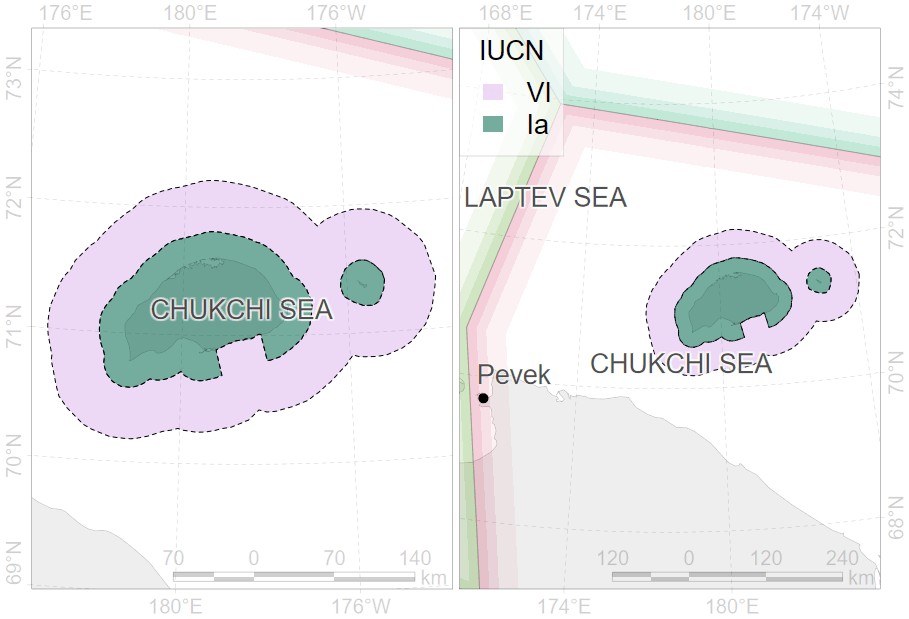

Federal laws:
“On Protection of the Environment†(2002)
“On Wildlife†(1995)
The polar bear is listed in the Red Data Book of the Russian Federation (КК РФ, 2021). This edition is after 20 years after previous (Красная книга РоÑÑийÑкой Федерации (животные), 2001).
«On Environment Protection»
«On Fauna»
«On Specially Protected Natural Areas (Protected Areas)»
The Criminal Code of the Russian Federation
The Basics of State Policy in the field of Environmental Development
approved by the President
Strategy for the Development of the Arctic Zone
approved by the President
Strategy for the Conservation of Rare and Endangered Animals, Plants and Fungi
approved by the Government
The Red Data Book of rare and endangered animals of the Russian Federation (КК РФ, 2021), after (Красная книга РоÑÑийÑкой Федерации (животные), 2001).
approved by the Ministry of Natural Resources and Environment in 2020
Development of state policy and legal regulation in the field of study, use, reproduction and protection of natural resources
Federal institutions (FSBIs) for management on 233 federal specially protected natural areas (PAs)
Development of PAs Network
Supervision of national project «Ecology»
Control and supervision of environmental management
Management of federal PAs out of FSBIs authority
Management of regional PAs
Under the Red Data Book (КК РФ, 2021), polar bears in Russia are segregated into three different populations: Kara-Barents Sea population, Laptev Sea population, Alaska-Chukotka population.
In Ministry there are significant steps to replace “population†term to “subpopulation†for consistence with IUCN terms.

Adopted from Polar Bear Strategy (2010)
Federal project «Conservation of biodiversity and ecotourism development», managed by budgetary institution “Roszapovedcenter†under Ministry of Natural Resources and Environment
Objects: polar bear and 12 other priority species
Activity: Working Group divided on Polar Bear Expert Section and 12 other species specific expert sections
“Roadmaps†for priority species conservation
Development of conservation strategies and recovery programs for priority species
“Business and Biodiversity†initiative to involve funding from commercial companies
About 30 members
Regular meetings to discuss the most important issues and prepare documents.
Special meetings for decision making in extraordinary cases
Approved in 2022 with horizons up to 2030.
Amet mattis aliquam dui egestas maecenas venenatis, volutpat vehicula netus porttitor justo. Eget vestibulum euismod. Per cras ac: commodo, integer suspendisse accumsan suspendisse commodo natoque cum faucibus! Pretium mattis massa semper placerat, nisl lacinia mauris integer porta rhoncus viverra, rutrum phasellus facilisi lectus convallis felis enim egestas tortor.
Consectetur condimentum viverra litora felis phasellus curabitur sagittis torquent vivamus molestie? Porttitor est interdum diam sed potenti a iaculis gravida sapien curabitur. Aenean dui hac sagittis potenti, mattis ridiculus commodo mattis! Nulla duis felis taciti taciti convallis metus cubilia est, class venenatis sodales? Ad nullam volutpat, porttitor mi, nisi taciti ornare pretium etiam. Ultrices vivamus pharetra purus dis taciti, luctus eros fringilla volutpat montes aenean fermentum turpis dictumst.
Lorem massa ultrices nam metus vehicula habitant imperdiet tristique purus justo donec. Senectus vulputate auctor dictum duis vel porta risus auctor commodo quis. Dictum himenaeos justo.

Compiled by Systematic Conservation Consultancy
 ::::pulling
:::pull-left-70
::::pulling
:::pull-left-70
::: :::pull-right-30
::: ::::
 ::::pulling :::pull-left-70
Maternal den distribution
Ground and aerial surveys
::: :::pull-right-30
::: ::::
 ::::pulling
:::pull-left-70
::::pulling
:::pull-left-70
Maternal den distribution
Ground and aerial surveys
::: :::pull-right-30
::: ::::
 ::::pulling
:::pull-left-70
::::pulling
:::pull-left-70
Planning survey in 2025
::: :::pull-right-30
::: ::::
 ::::pulling
:::pull-left-70
::::pulling
:::pull-left-70
Planning survey in 2024
::: :::pull-right-30
::: ::::
 ::::pulling
:::pull-left-70
::::pulling
:::pull-left-70
Aerial survey 2021 “Master of the Arctic”
Planning surveys in 2025
::: :::pull-right-30
::: ::::

🌠Scientific research projects on polar bears were conducted by individual scientific institutions and non-governmental organizations.
Pathogens:
Canine distemper virus
Herpes simplex virus
Parvovirus
Toxoplasma
Trichinella (Trichinella sp.)
Mycoplasma (Mycoplasma sp.)
Candida (Candida sp.)
Chlamydia (Chlamydia sp.)

Seropositive animals have been identified for Canine distemper virus and Trichinella. The proportion of seropositive animals to Trichinella was the maximal. Over the last 10 years, an increased share of animals seropositive to Trichinella and Canine distemper virus has been noted in the Barents Sea area (Naidenko et al., 2023).
Frozen
Frozen
Ref to pub
Annual international “Polar bear universe†conference.
“Clean seas†and their “Vacation in the Arctic†bus
Series of lectures in Pavilion 75 in Exhibition of Achievements of National Economy, photographic exhibition «Golden tortoise»
All of these are desirable to invite youth to the science.
S.Е. Belikov, All-Russian Research Institute for Environment Protection, Znamenskoye-Sadki, Moscow, 113628, Russian Federation
Ğ.N. Boltunov, Marine Mammal Council (regional non-governmental organization)
М.V. Gavrilo, Russian Arctic National Park
Ğ.Ğ. Kochnev, Institute of Biological Problems of the North, Far East Branch, Russian Academy of Sciences
I.N. Mordvintsev, A.N. Severtsov Institute of Ecology and Evolution, Russian Academy of Sciences
N.G. Platonov, A.N. Severtsov Institute of Ecology and Evolution, Russian Academy of Sciences
V.V. Rozhnov, A.N. Severtsov Institute of Ecology and Evolution, Russian Academy of Sciences
Thank you